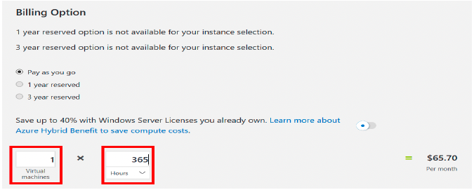

Lab 1: Use the Pricing Calculator (10 min)
In this Lab, we will use the Azure Pricing Calculator to generate a cost estimate for an Azure virtual machine and related network resources.
Task 1: Configure the pricing calculator
In this task, we will estimate the cost of a sample infrastructure by using the Azure Pricing Calculator.
Note: To create an Azure Pricing Calculator estimate, this Lab provides example configurations for the VM and related resources. Use this example configurations or provide the Azure Pricing Calculator with details of your actual resource requirements instead.
1 - In a browser, navigate to the Azure Pricing Calculator webpage.
2 - To add details of your VM configuration, click Virtual Machines on the Products tab. Scroll down to view the virtual machine details.
3 - Replace Your Estimate and Virtual Machines text with more descriptive names for your Azure Pricing Calculator estimate and your VM configuration. This Lab example uses My Pricing Calculator Estimate for the estimate, and Windows VM for the VM configuration.
4 - Modify the default VM configuration.
| Setting | Value |
|---|---|
| Region | North Europe |
| Operating System | Windows |
| Type | (OS only) |
| Tier | Standard |
| Instance | A2: 2 Core(s), 3.5 GB RAM, 135 GB Temporary storage |
Note: The VM instance specifications and pricing may differ from those in this example. Follow this Lab by choosing an instance that matches the example as closely as possible. To view details about the different VM product options, choose Product details from the More info menu on the right.
5 - Set the Billing Option to Pay as you go.
6 - In Azure, a month is defined as 730 hours. If your VM needs to be available 100 percent of the time each month, you set the hours-per-month value to 730. This Lab example requires one VM to be available 50 percent of the time each month.
Leave the number of VMs set at 1, and change the hours-per-month value to 365.

7 - In the Managed OS Disks pane, modify the default VM storage configuration.
| Tier | Disk size | Nº. of disks | Snapshot | Storage transactions |
|---|---|---|---|---|
| Standard HDD | S30: 1024 GiB | 1 | Off | 10.000 |
8 - To add networking bandwidth to your estimate, go to the top of the Azure Pricing Calculator webpage. Click Networking in the product menu on the left, then click the Bandwidth tile. In the Bandwidth added message dialog, click View.

9 - Add a name for your VM bandwidth configuration. This Lab example uses the name Bandwidth: Windows VM. Modify the default bandwidth configuration by adding the following details.
| Region | Zone 1 Outbound Data Transfer Amount |
| ------ | -------------------------------------- |
| North Europe | 50 GB |
10 - To add an Application Gateway, return to the top of the Azure Pricing Calculator webpage. In the Networking product menu, click the Application Gateway tile. In the Application Gateway message dialog, click View.
11 - Add a name for your Application Gateway configuration. This Lab uses the name App Gateway: Windows VM. Modify the default Application Gateway configuration by adding the following details.
| Setting | Value |
|---|---|
| Region | North Europe |
| Tier | Basic |
| Size | Small |
| Instances | 1 |
| Hours | 365 |
| Data Processed | 50 GB |
| Zone 1: North America,Europe | 50 GB |
Task 2: Review the pricing estimate
In this task, we will review the results of the Azure Pricing Calculator.
1 - Scroll to the bottom of the Azure Pricing Calculator webpage to view total Estimated monthly cost.
Note: Explore the various options available within the Azure Pricing Calculator. For example, this Lab requires you to update the currency to Euro.
2 - Change the currency to Euro, then select Export to download a copy of the estimate for offline viewing in Microsoft Excel (.xlsx) format.
Congratulations! You downloaded an estimate from the Azure Pricing Calculator.